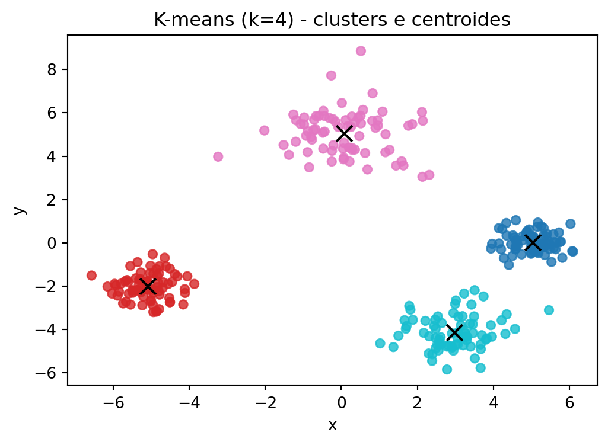
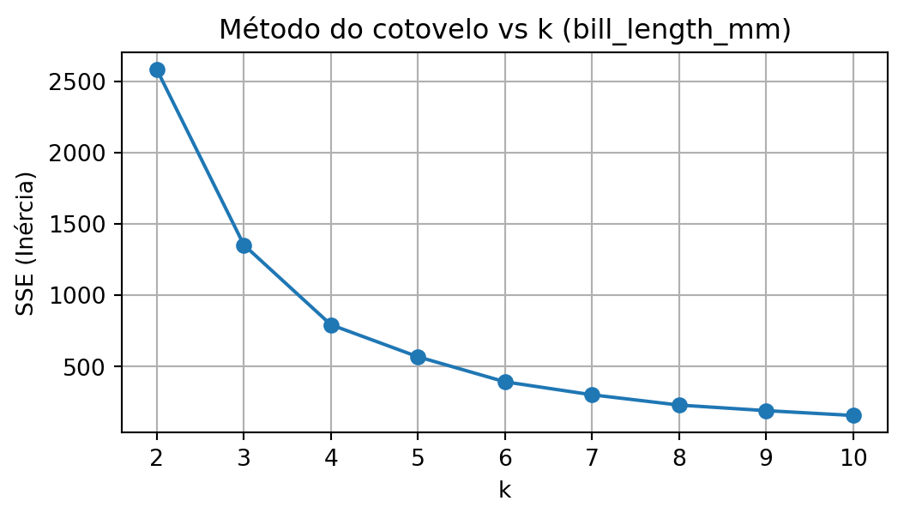
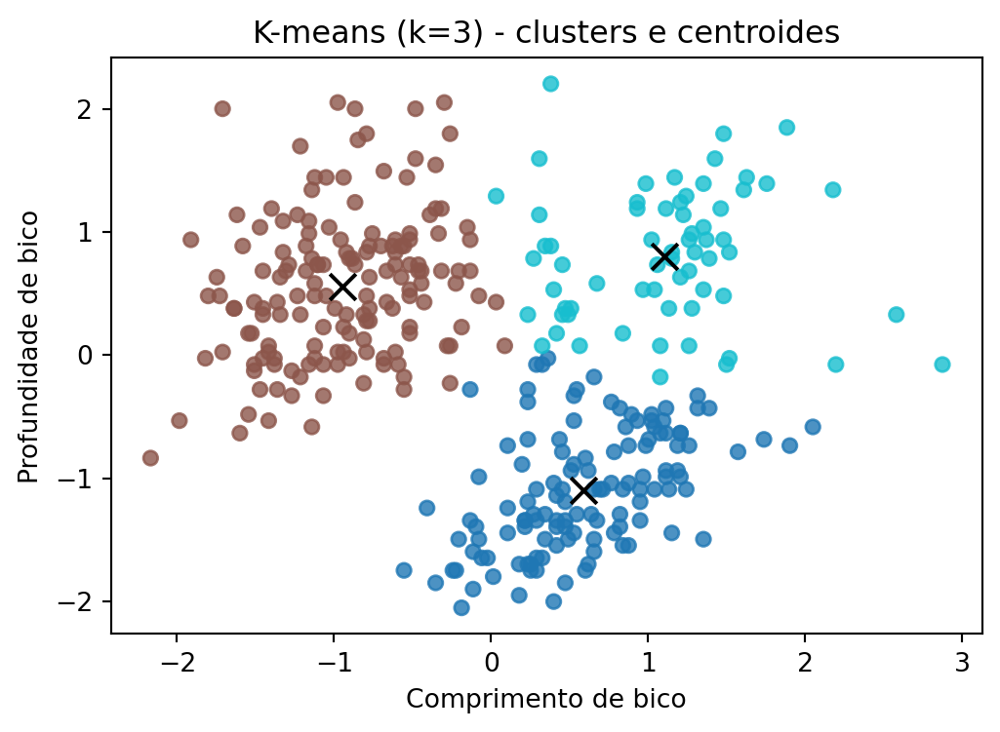
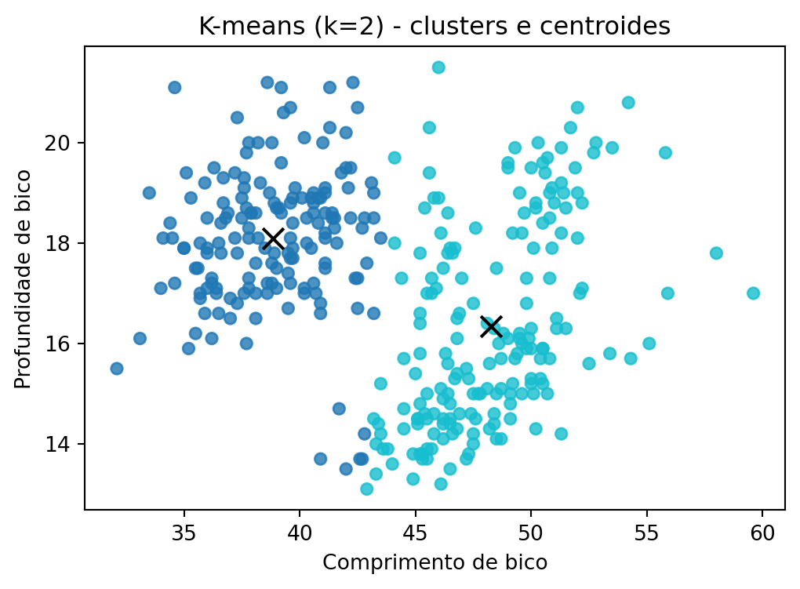
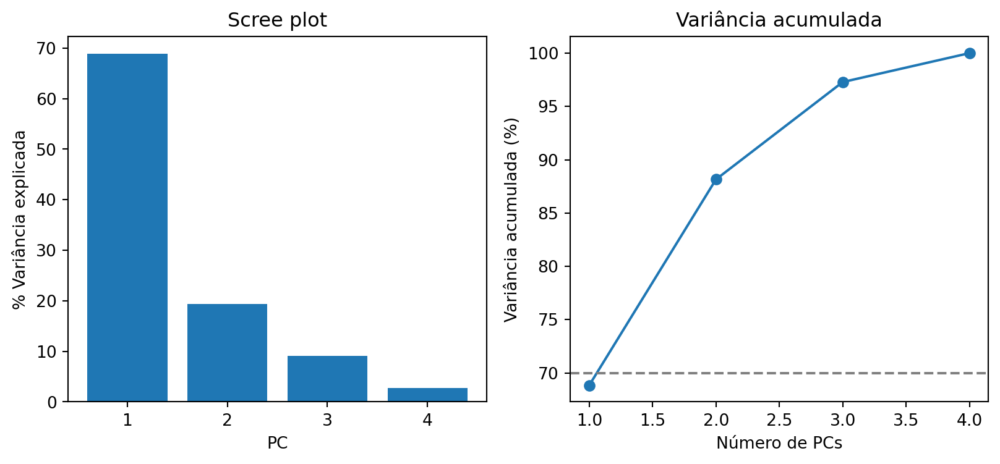
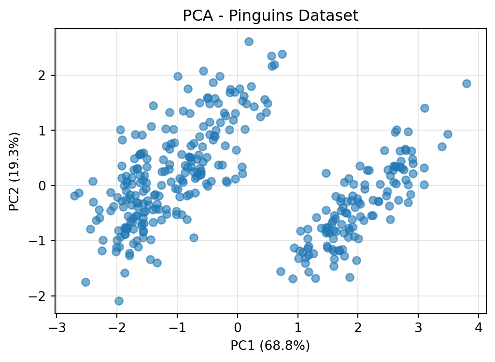
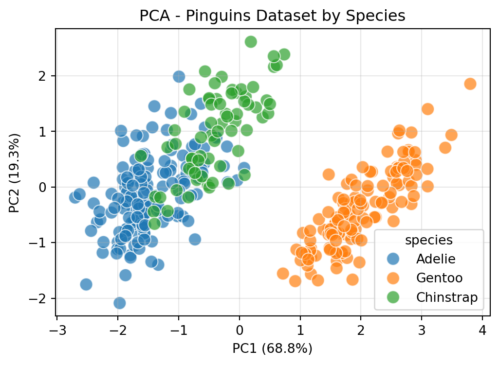

Introdução à Estatística com Python
2026-02-13
Conjunto de técnicas cuja finalidade é agregar objetos com base em suas características.
Classes, grupos ou clusters (agrupamento de objetos pela distância ou similaridade)
Obtenção de grupos de forma mais homogênea possível
Obtenção da maior heterogeneidade possível fora (comparação entre grupos)
Classificação hierárquica: há classificação de importância entre as classes
Classificação não hierárquica: não há classificação de importância entre as classes
Classificação é independente das medidas de distância ou similaridade.
Também chamado de algoritmo de Lloyd-Forgy
Algoritmo que minimiza as distâncias entre os subgrupos e seus elementos.
Não hierárquico
Processo iterativo
Necessário definir um k a priori
Vantagens
Desvatagens
Pesa a homogeneidade, deixando de lado a distância entre os grupos (inicialização ruim de centroides)
Má escolha de agrupamentos pode aproximar grupos ou particionar grupos de forma artificial
Método não tem bom comportamento quando grupos têm diâmetros muito diferentes
Importando dataset de pinguins:
| species | island | bill_length_mm | bill_depth_mm | flipper_length_mm | body_mass_g | sex | year | |
|---|---|---|---|---|---|---|---|---|
| 0 | Adelie | Torgersen | 39.1 | 18.7 | 181.0 | 3750.0 | male | 2007 |
| 1 | Adelie | Torgersen | 39.5 | 17.4 | 186.0 | 3800.0 | female | 2007 |
| 2 | Adelie | Torgersen | 40.3 | 18.0 | 195.0 | 3250.0 | female | 2007 |
| 3 | Adelie | Torgersen | NaN | NaN | NaN | NaN | NaN | 2007 |
| 4 | Adelie | Torgersen | 36.7 | 19.3 | 193.0 | 3450.0 | female | 2007 |
print("Dimensões do dataframe depois:\n", penguins_subset_bill_length.shape)
na_counts = penguins_subset_bill_length.isna().sum()
print("Dados faltantes por coluna:\n", na_counts)
penguins_subset_bill_length = penguins_subset_bill_length.dropna(subset=["bill_length_mm"])
print("Dimensões do dataframe depois:\n", penguins_subset_bill_length.shape)Dimensões do dataframe depois:
(344, 2)
Dados faltantes por coluna:
species 0
bill_length_mm 2
dtype: int64
Dimensões do dataframe depois:
(342, 2)plt.figure(figsize=(6,4))
plt.scatter(penguins_subset_bill_length["bill_length_mm"], penguins_subset_bill_length["bill_length_mm"], c=penguins_subset_bill_length["kmeans_label"], cmap="tab10", s=30, alpha=0.8)
plt.scatter(centroids, centroids, c="black", s=100, marker="x")
plt.title("K-means (k=4) - clusters e centroides")
plt.xlabel("Comprimento de bico (mm)"); plt.ylabel("Comprimento de bico (mm)")
plt.show()
Inércia (soma de quadrados intra-cluster): 793.6578822154061
Silhouette score: 0.5717633063744535X = penguins_subset_bill_length[['bill_length_mm']].values
ks = range(2, 11)
scores = []
for k in ks:
km = KMeans(n_clusters=k, random_state=42, n_init=10)
labels = km.fit_predict(X)
scores.append(km.inertia_)
plt.figure(figsize=(6,3))
plt.plot(list(ks), scores, marker='o')
plt.xticks(list(ks))
plt.xlabel('k')
plt.ylabel('SSE (Inércia)')
plt.title('Método do cotovelo vs k (bill_length_mm)')
plt.grid(True)
plt.show()
bill_length_mm flipper_length_mm
0 39.1 181.0
1 39.5 186.0
2 40.3 195.0
3 NaN NaN
4 36.7 193.0
.. ... ...
339 55.8 207.0
340 43.5 202.0
341 49.6 193.0
342 50.8 210.0
343 50.2 198.0
[344 rows x 2 columns]print("Dimensões do dataframe depois:\n", penguins_subset_bill_flipper_info.shape)
na_counts = penguins_subset_bill_flipper_info.isna().sum()
print("Dados faltantes por coluna:\n", na_counts)
penguins_subset_bill_flipper_info = penguins_subset_bill_flipper_info.dropna(subset=["bill_length_mm", "flipper_length_mm"])
print("Dimensões do dataframe depois:\n", penguins_subset_bill_flipper_info.shape)Dimensões do dataframe depois:
(344, 3)
Dados faltantes por coluna:
species 0
bill_length_mm 2
flipper_length_mm 2
dtype: int64
Dimensões do dataframe depois:
(342, 3)X = penguins_subset_bill_flipper_info[['bill_length_mm', 'flipper_length_mm']].values
from sklearn.preprocessing import StandardScaler
scaler = StandardScaler()
X_scaled = scaler.fit_transform(X)
ks = range(2, 11)
scores = []
for k in ks:
km = KMeans(n_clusters=k, random_state=42, n_init=10)
labels = km.fit_predict(X_scaled)
scores.append(km.inertia_) bill_length_mm bill_depth_mm
0 39.1 18.7
1 39.5 17.4
2 40.3 18.0
3 NaN NaN
4 36.7 19.3
.. ... ...
339 55.8 19.8
340 43.5 18.1
341 49.6 18.2
342 50.8 19.0
343 50.2 18.7
[344 rows x 2 columns]print("Dimensões do dataframe depois:\n", penguins_subset_bill_info.shape)
na_counts = penguins_subset_bill_info.isna().sum()
print("Dados faltantes por coluna:\n", na_counts)
penguins_subset_bill_info = penguins_subset_bill_info.dropna(subset=["bill_length_mm", "bill_depth_mm"])
print("Dimensões do dataframe depois:\n", penguins_subset_bill_info.shape)Dimensões do dataframe depois:
(344, 3)
Dados faltantes por coluna:
species 0
bill_length_mm 2
bill_depth_mm 2
dtype: int64
Dimensões do dataframe depois:
(342, 3)X = penguins_subset_bill_info[['bill_length_mm', 'bill_depth_mm']].values
from sklearn.preprocessing import StandardScaler
scaler = StandardScaler()
X_scaled = scaler.fit_transform(X)
ks = range(2, 11)
scores = []
for k in ks:
km = KMeans(n_clusters=k, random_state=42, n_init=10)
labels = km.fit_predict(X_scaled)
scores.append(km.inertia_)k = 3
km = KMeans(n_clusters=k, random_state=42, n_init=10)
X = penguins_subset_bill_info[['bill_length_mm', 'bill_depth_mm']].values
from sklearn.preprocessing import StandardScaler
scaler = StandardScaler()
X_scaled = scaler.fit_transform(X)
penguins_subset_bill_info_pred = km.fit_predict(X_scaled)
penguins_subset_bill_info["kmeans_label"] = penguins_subset_bill_info_pred
centroids = km.cluster_centers_
centroidsarray([[ 0.5911792 , -1.09537263],
[-0.9445639 , 0.56039219],
[ 1.1034512 , 0.79971209]])Inércia (soma de quadrados intra-cluster): 186.92125137657513
Silhouette score: 0.4604654800681205plt.figure(figsize=(6,4))
plt.scatter(X_scaled[:,0], X_scaled[:,1], c=penguins_subset_bill_info["kmeans_label"], cmap="tab10", s=30, alpha=0.8)
plt.scatter(centroids[:,0], centroids[:,1], c="black", s=100, marker="x")
plt.title("K-means (k=3) - clusters e centroides")
plt.xlabel("Comprimento de bico"); plt.ylabel("Profundidade de bico")
plt.show()
array([[38.85822785, 18.08860759],
[48.2701087 , 16.34619565]])plt.figure(figsize=(6,4))
plt.scatter(penguins_subset_bill_info["bill_length_mm"], penguins_subset_bill_info["bill_depth_mm"], c=penguins_subset_bill_info["kmeans_label"], cmap="tab10", s=30, alpha=0.8)
plt.scatter(centroids[:,0], centroids[:,1], c="black", s=100, marker="x")
plt.title("K-means (k=2) - clusters e centroides")
plt.xlabel("Comprimento de bico"); plt.ylabel("Profundidade de bico")
plt.show()
Técnica de redução de dimensionalidade
Amplamente usada:
Identificação de componentes ortogonais que capturam a maior parte da variância no conjunto de dados inicial
Transformação de um conjunto de variáveis correlacionadas em um conjunto MENOR de variáveis não correlacionadas
Variáveis linearmente não correlacionadas, cujos índices estão medindo diferentes dimensões dos dados:
Primeira componente principal (PC1): direção no espaço de variáveis com maior variação dos dados.
Segunda componente principal (PC2): direção no espaço de variáveis com maior variação dos dados, que seja ortogonal à PC1
Demais componentes principais (PC3, PC4 …): direção no espaço de variáveis com maior variação dos dados, que sejam ortogonais às componentes anteriores.
A maior parte da variação costuma ser descrita pelas primeiras CPs, cujas variâncias não são desprezíveis.
Estão presentes variáveis correlacionadas (correlação > 0,30)
Exploração de pelo menos 70% da variância total da amostra
É gerado um número mínimo de componentes principais
Padronização dos dados (PCA é afetada pela escala das variáveis)
Geração de uma matriz de covariância
Decomposição espectral - análise de autovalores e autovetores
Ordenação de CPs de maior para menor autovalor (valores maiores explicam a maior variância)
Visualização
Exploração
Pré-processamento
Importando dataset de pinguins:
| species | island | bill_length_mm | bill_depth_mm | flipper_length_mm | body_mass_g | sex | year | |
|---|---|---|---|---|---|---|---|---|
| 0 | Adelie | Torgersen | 39.1 | 18.7 | 181.0 | 3750.0 | male | 2007 |
| 1 | Adelie | Torgersen | 39.5 | 17.4 | 186.0 | 3800.0 | female | 2007 |
| 2 | Adelie | Torgersen | 40.3 | 18.0 | 195.0 | 3250.0 | female | 2007 |
| 3 | Adelie | Torgersen | NaN | NaN | NaN | NaN | NaN | 2007 |
| 4 | Adelie | Torgersen | 36.7 | 19.3 | 193.0 | 3450.0 | female | 2007 |
| bill_length_mm | bill_depth_mm | flipper_length_mm | body_mass_g | |
|---|---|---|---|---|
| 0 | 39.1 | 18.7 | 181.0 | 3750.0 |
| 1 | 39.5 | 17.4 | 186.0 | 3800.0 |
| 2 | 40.3 | 18.0 | 195.0 | 3250.0 |
| 4 | 36.7 | 19.3 | 193.0 | 3450.0 |
| 5 | 39.3 | 20.6 | 190.0 | 3650.0 |
| bill_length_mm | bill_depth_mm | flipper_length_mm | body_mass_g | |
|---|---|---|---|---|
| 0 | -0.884499 | 0.785449 | -1.418347 | -0.564142 |
| 1 | -0.811126 | 0.126188 | -1.062250 | -0.501703 |
| 2 | -0.664380 | 0.430462 | -0.421277 | -1.188532 |
| 3 | -1.324737 | 1.089724 | -0.563715 | -0.938776 |
| 4 | -0.847812 | 1.748985 | -0.777373 | -0.689020 |
Decomposição espectral
Autovalores: variância explicada pelo componente
Autovetores: direção do componente
[0.10881037 0.36630698 0.7747822 2.76183065]
[[ 0.14552311 0.64430115 0.59703114 0.45525033]
[-0.16798597 -0.41842724 0.79776657 -0.40033468]
[-0.78379875 -0.23208397 0.0022822 0.57601332]
[ 0.57988211 -0.59660012 0.08436292 0.54835019]]
bill_length_mm bill_depth_mm flipper_length_mm \
bill_length_mm 1.002933 -0.235742 0.658106
bill_depth_mm -0.235742 1.002933 -0.585563
flipper_length_mm 0.658106 -0.585563 1.002933
body_mass_g 0.596855 -0.473300 0.873757
body_mass_g
bill_length_mm 0.596855
bill_depth_mm -0.473300
flipper_length_mm 0.873757
body_mass_g 1.002933 order = np.argsort(eigvals)[::-1]
eigvals = eigvals[order]
eigvecs = eigvecs[:, order]
explained_var = eigvals / eigvals.sum()
cum_explained = np.cumsum(explained_var)
explained_df = pd.DataFrame({
"eigenvalue": eigvals,
"explained_variance": explained_var,
"cumulative_variance": cum_explained
}, index=[f"PC{i+1}" for i in range(len(eigvals))])
explained_df.head()| eigenvalue | explained_variance | cumulative_variance | |
|---|---|---|---|
| PC1 | 2.761831 | 0.688439 | 0.688439 |
| PC2 | 0.774782 | 0.193129 | 0.881568 |
| PC3 | 0.366307 | 0.091309 | 0.972877 |
| PC4 | 0.108810 | 0.027123 | 1.000000 |
pcs = pd.DataFrame(X_scaled.dot(eigvecs),
index=penguins_pca.index,
columns=explained_df.index)
fig, axes = plt.subplots(1, 2, figsize=(10, 4))
axes[0].bar(range(1, len(explained_var)+1), explained_var * 100)
axes[0].set_xlabel("PC")
axes[0].set_ylabel("% Variância explicada")
axes[0].set_title("Scree plot")
axes[1].plot(range(1, len(cum_explained)+1), cum_explained * 100, marker='o')
axes[1].axhline(70, color='gray', ls='--')
axes[1].set_xlabel("Número de PCs")
axes[1].set_ylabel("Variância acumulada (%)")
axes[1].set_title("Variância acumulada")Text(0.5, 1.0, 'Variância acumulada')
<Figure size 960x480 with 0 Axes>
plt.figure(figsize=(6, 4))
sns.scatterplot(x="PC1", y="PC2", data=pcs, hue=penguins_species, palette="tab10", s=100, alpha=0.7)
plt.xlabel(f"PC1 ({explained_var[0]*100:.1f}%)")
plt.ylabel(f"PC2 ({explained_var[1]*100:.1f}%)")
plt.title("PCA - Pinguins Dataset by Species")
plt.grid(True, alpha=0.3)
plt.show()
Material com exemplos criados com GitHub Copilot usando modelo(s):
GPT 5.0Géron, A. Hands-On Machine Learning with Scikit-Learn, Keras & Tensorflow. Terceira Edição (capítulo 9). 2025.
Munonye, K. Data Science and Analytics with Python: A Comprehensive Guide. 2025.
Machado, C. C. e Campos, F. K. R. Análise multivariada: introdução aos conceitos. 2023.